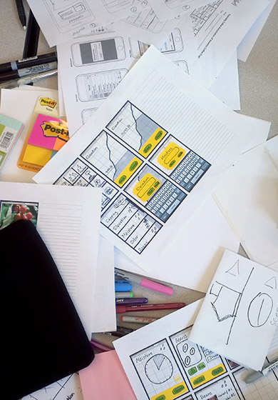
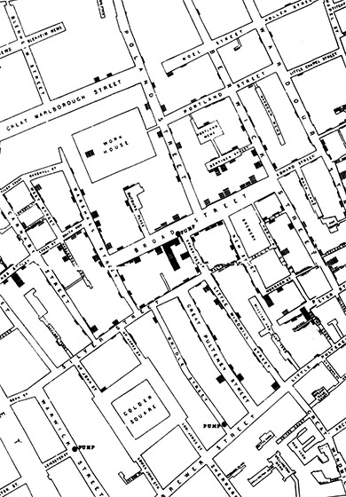
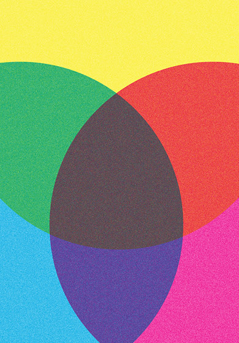
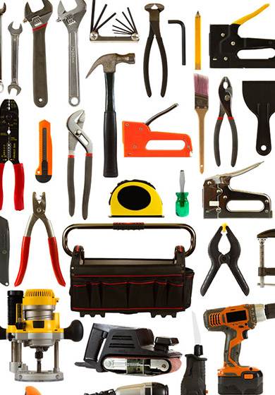
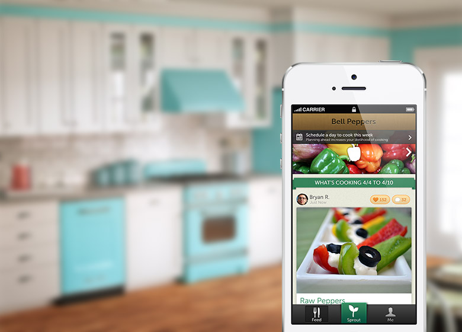
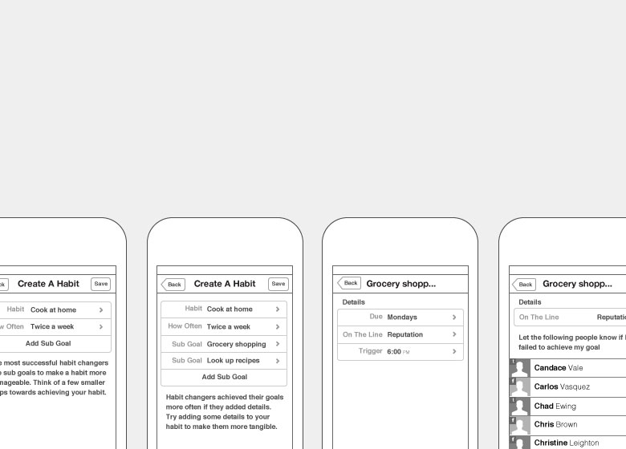
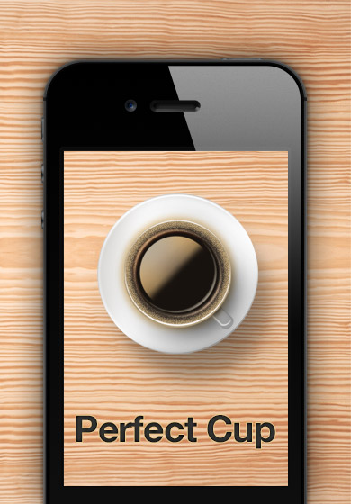
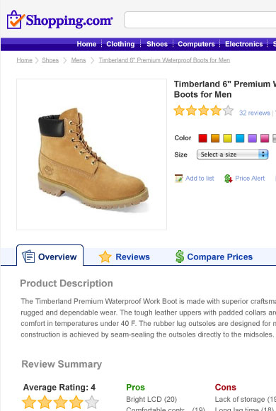
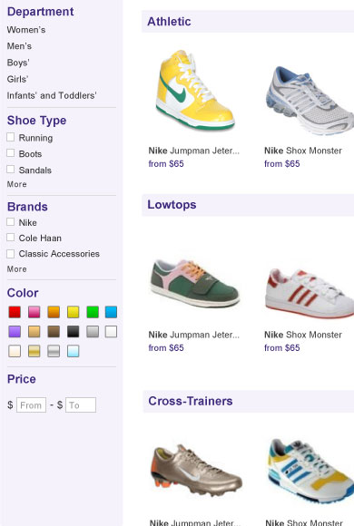
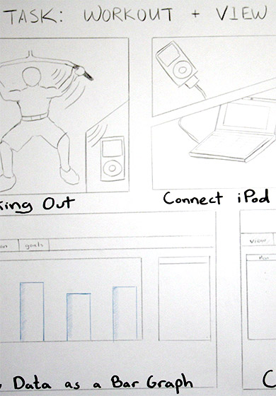

I'm excited by the intersection of design, technology, and psychology and am keen on empowering people to make better decisions and live more fulfilling lives.
Poke around. Like what you see? Let's talk
Over the years, I've come to see design primarily as a way to empower people; help them to achieve their goals, connect with people near and far, and enjoy the little things in life.
I started down this path studying psychology and Human Computer Interaction at Stanford University. Psychology provided a solid foundation for understanding human behavior while HCI gave me a framework for designing engaging experiences.
After graduating, I moved to San Francisco and worked as an Interaction Designer at Shopping.com, an eBay company. Working on a small design team allowed me to work on just about everything from brainstorming new product ideas, to user research and usability testing, to wireframing and prototyping, to final visual design and polish. After four years of helping people find the right product at the best price, I got the academic itch again and headed back to school.
Two years later, I recieved a Master's from UC Berkeley’s School of Information. My graduate studies focused on using technology to assist people with behavior change and decision-making. My school work culminated in a final capstone project using the iPhone to help people eat healthier.
I just started an exciting new job as a Interaction Designer on Google Play Music and will be focusing on delighting people with beautiful and immersive media experiences.
To create a great design solution, we first need to know the problem. This observation might seem trivial but it’s amazing how often we jump to solutions before we understand why. This step in the process is all about asking questions. Ask why five times and you'll just begin to scratch the surface.
Defining involves exploration, research, interviews, competitive analysis and a healthy dose of skepticism. The initial understanding of the problem should evolve and mature throughout the project.
With an understanding of the problem, it’s time to talk to people. Through interviews and observation, we learn their needs, goals, and motivations. We also discover when and where the need arises. Talking to people allows us to understand their world allowing us to empathize.
We should leave this phase with a deep understanding of the people who will ultimately be affected by the product or service we create. We begin to see the problem through their eyes and develop an intuitive sense of their needs and how they might react to or interact with the product.

We begin synthesizing information by looking for patterns, insights and connections to guide design decisions. Artifacts often include affinity diagrams, personas, scenarios, use cases, frameworks, and opportunity/cost matrices.
It’s all too easy to draw surface level conclusions when looking over the data (e.g. users didn’t click because the button wasn’t big enough). We must look beyond the surface to tease out the underlying motivations behind observed behavior (e.g. users didn’t click because they were exhausted from work and wanted to be with their family).

It’s finally time to put pen to paper; sketching, wireframing, making mocks and prototyping solutions. Iterate. Iterate. Iterate. Iteration is key during the next few phases. Ideally, we’ll construct, test and refine many times throughout the project as we hone in on the solution.
Prototyping is one of the best ways to build consensus. Describing a feature with words leads to misunderstandings and different interpretations of the same idea. Prototypes remove the ambiguity and allow the team to experience the idea as a user might.
After generating several possible solutions, we can test the ideas and see how well they meet users' needs. Interfaces and products don’t meaningfully exist until people use them so it’s an essential part of the process to test out the ideas before fully developing them. Testing lets us see what works, what needs refinement and where we need to start fresh.
Testing and refining often get skipped in order to move faster. While skipping might lead to an earlier release, it ends up costing more time in the long run as the product will most likely need to be redesigned later. Measure twice, cut once.

Typically referred to as a post mortem, this is the time to take a step back and evaluate how the project went to determine if there are ways to improve things for the next time or if there were learnings that should be persisted going forward.





